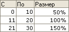

Данный справочник содержит показатели для схем мотивации работников. На основании значений показателей рассчитываются начисления и удержания. В данном справочнике описываются показатели.
Показатель может нести следующие признаки:
Тип показателя определяет сущность показателя. Виды могут быть следующими:
Денежный показатель - это значит, что значение показателя это деньги и в дальнейшем нужно запрашивать валюту, в которой указано значение показателя.
Числовой показатель - это значит, что значение показателя это число.
Процентный показатель - это означает, что показатель задан в процентах и для расчетов нужно значение переводить в число. Например, если задано значение 50 для процентного показателя, то необходимо в расчетах использовать число 50/100 т.е. 0,5.
Оценочная шкала. Так же, показатель может быть шкалой оценки. Шкала оценки это таблица из трех столбцов. В первых двух столбцах задается диапазон (С ... По ... ), а в третьей колонке задается результат (Размер). Оценка по шкале производится следующим образом. Предположим, шкале оценки передается число Х. В оценочной таблице находится строка, в которой число Х находится между значениями в колонках "С" и "По". Из найденной строки возвращается число из колонки "Размер".
Например, зададим таблицу для расчета премии с продаж. Премия будет вычисляться как процент от оклада в зависимости от количества продаж. В первых двух колонках зададим диапазоны количества продаж, а в третьей колонке - размер премии в проценте от оклада.
Как работает таблица. Если сотрудник сделал 12 продаж, тогда в соответствии с таблицей ему причитается 100% от оклада. Если сделал 6 продаж, тогда только 50%. И так далее.
Оценочная шкала бывает двух видов. Числовая шкала и процентная шкала. Если шкала процентная, то это значит, что при расчетах нужно значения из колонки "Результат" переводить в число. В качестве нашего предыдущего примера приведена процентная оценочная таблица.
Этот реквизит говорит о порядке ввода показателя пользователем. Возможны следующие варианты:
Вводится только при кадровых изменениях - это значит, что значение показателя будет задано при приеме на работу и может изменяться только при кадровых перемещениях работника. Например, это может быть значение месячной тарифной ставки (оклада), часового тарифа, нормы выработки и т.д.
Может изменяться при расчете - это значит что значение показателя может быть изменено при начислении зарплаты (в документе Начисление зарплаты), но по умолчанию будет использоваться значение уже заданное при приеме на работу или кадровом назначении.
Вводится только при расчете - это значит, что значение показателя не задано и его каждый раз нужно вводить при расчете. Это может быть любой показатель эффективности (KPI), например, количество продаж, доход от продаж, средний чек, количество заказов, узнаваемость торговой марки и т.д.
Виден, но не редактируется при расчете - это значит, что значение показателя задается в регистре сведений "Значения показателей схем мотиваций" и его нельзя редактировать расчете.
Периодически - это значит, что значение показателя задается в регистре сведений "Периодические значения показателей схем мотивации" и действует до ввода нового значения. Такой порядок доступен только для общих показателей и для показателей подразделения.
Для предопределенных показателей схем мотивации, таких как Норма времени в днях, Время в днях, Сдельная выработка порядок ввода не задается. Такие предопределенные показатели рассчитываются программой автоматически на стадии расчета документа Начисление зарплаты.
Показатели делятся по видам на:
Для компании в целом: Продажи
Для кадровой службы:
Эти предопределенные элементы определяют отработанное время в днях/часах с учетом вытеснений
Определяется время по норме, с учетом кадровых движений. Если сотрудник отработал неполный месяц на назначении, то значения этих показателей будет отлично от значений за месяц в целом.
Определяет время в целом за месяц независимо от кадровых перемещений, даже если сотрудник по назначению работал только часть месяца.
Этот параметр определяет значение оклада за час в расчетном месяце (значение определяется при заполнении или при изменении вида расчета)
Определяет сумму начислений указанных как базовые
Определяет сумму оплачиваемого времени (в днях/часах) начислений, указанных как базовые. Может применяться для дополнительных начислений за уже оплаченное время, зависящих от отработанного времени.